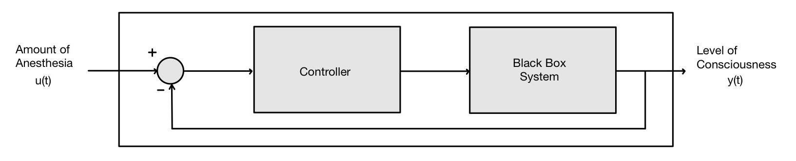

Control Theory, Linear Time-Invarient Systems, Noise Filters, Bode Plots, MATLAB
As computational power has made tremendous progress in recent history, control theory has been able to be applied to various applications to model and control black box systems.
The goal of this project was the determination of a linear, time-invariant state-space or transfer function that heuristically models a black box system. After proving linearity and time-invariance, an optimal noise filter was determined to reduce noise. A Proportional-Integral-Derivative (PID) controller was then developed based off of the corresponding Bode plots that were generated. This controller must meet all the performance criteria required.
The full paper of this project can be viewed below: